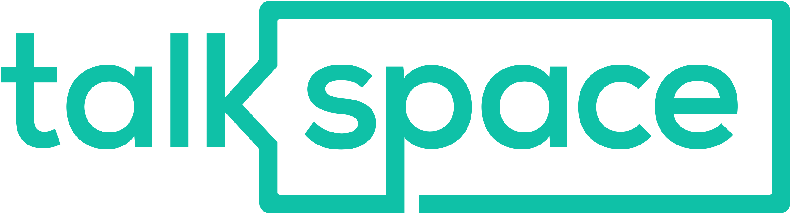

<!--
  Generated template for the SignupPage page.

  See http://ionicframework.com/docs/components/#navigation for more info on
  Ionic pages and navigation.
-->


<ion-content padding class="transparent-header">
  <ion-header>
    <ion-navbar>
    </ion-navbar>
  </ion-header>
  
  <div padding>
    <ion-item>
      <ion-input type="text" placeholder="Username"></ion-input>
    </ion-item>
    <ion-item>
      <ion-input type="text" placeholder="Email"></ion-input>
    </ion-item>
    <ion-item>
      <ion-input type="text" placeholder="Password"></ion-input>
    </ion-item>
    <ion-item>
      <ion-input type="password" placeholder="Confirm Password"></ion-input>
    </ion-item>
    <button ion-button block outline  color="light" class="login-button">SignUp</button>
  </div>
  <div class="strike">
    <span>OR</span>
  </div>
  <button ion-button block clear (click)="login()" color="light" class="login-button"><ion-icon name="logo-facebook"></ion-icon> Login with Facebook</button>
</ion-content>
<ion-footer>
  <ion-toolbar class="footer">
    <div (click)="goToLogin()">
      <span>You have an account already <strong>Login here</strong>.</span>
    </div>
  </ion-toolbar>
</ion-footer>

